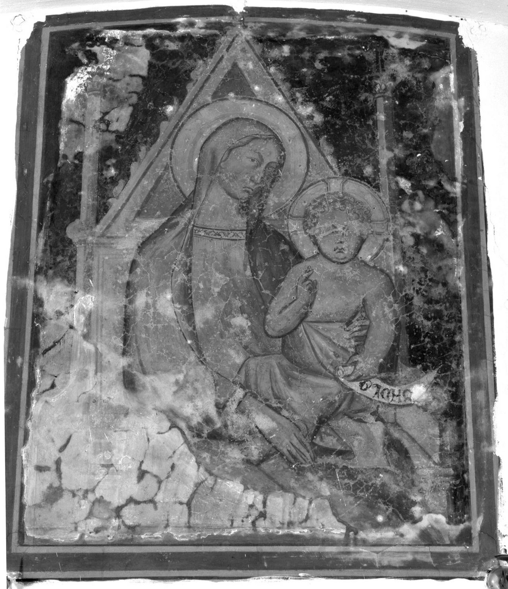

Madonna col Bambino in trono
Ambito senese, secondo quarto del XIV secolo
Tavola centinata con fondo oro punzonato, probabile scomparto centrale di un polittico smembrato
- Tipologia
- Dipinto
- Autore o ambito
- Ambito senese
- Datazione
- secondo quarto del XIV secolo
- Luogo
- Siena
- Stato di conservazione
- Discreto